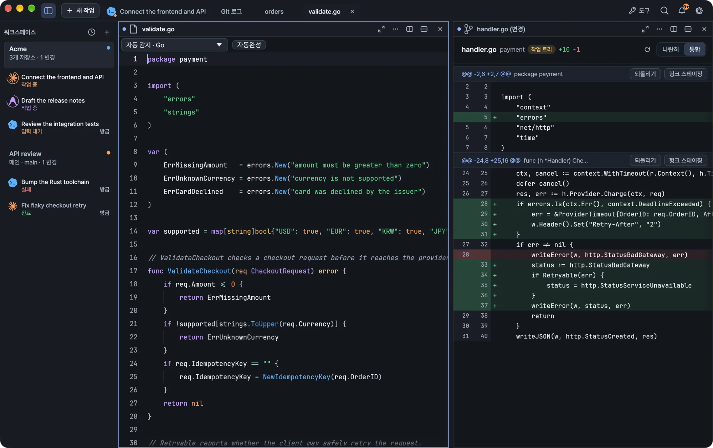

Open files from Finder, edit source and configuration files with syntax highlighting, and use language-server completion and project search.
Kiln includes a file editor next to your terminals, with syntax highlighting, completion from language servers and a file explorer. Open files, search and problems from the same workspace without leaving your task.
Kiln running a demo workspace.
Open the editor and tools
The workspace inspector includes Files, which opens the file explorer. The titlebar Tools menu lists files, search, source control, GitHub, databases, remote connections and problems together. Choosing one opens it alongside your current work. In compact windows, Back to Task returns you to the terminal.
Open from Finder on macOS
In Finder, select a file and choose Open With → Kiln. Ordinary files, dotfiles and files without an extension open in the editor. You can open several files together, whether Kiln is already running or starts for the request.
Folders open or focus a workspace. A file uses the most specific existing workspace that contains it. If none exists, Kiln opens a workspace at the file's parent folder. Opening a file that is already open focuses its existing editor and preserves unsaved changes, even when that editor belongs to another workspace.
File explorer
The explorer shows Git-ignored files and folders by default, including .env, .env.prod, logs and generated directories. You can open them like any other file, by clicking or with keyboard navigation.
Ignored entries have muted names and icons and a small Ignored badge.
Hover an ignored entry to see which rule excludes it.
Folders load only when you expand them.
Choose Hide ignored files to filter them out of the view.
Showing or hiding ignored files does not change Git tracking or your repository's ignore rules. Internal .git and .DS_Store metadata always stays hidden.
Language detection
The editor highlights files with bundled grammars. It picks a language from the filename and extension first, then from a shebang or a recognizable content signature such as a JSON document, XML, an HTML doctype or a PHP header. It does not guess a language from ordinary prose.
In light and dark themes, DotENV separates keys, assignment signs, values and # comments, including spaced assignments. Escaped characters and multiline quoted values keep their highlighting; a # inside quotes stays part of the value. SSH settings distinguish directives, values, ports, quotes, comments and expansions such as %h and ${HOME}, with highlighting for Host, Match and Include. Names such as .environment and .envoy do not select DotENV.
Detection covers common formats. If a file needs a different grammar, choose it manually; unrecognized content stays plain text.
To override detection, use the language selector above the document. Choose a language, including Plain Text, or return to Auto detect.
Your choice is kept across restarts, for both saved files and files with unsaved changes.
Editing a script's shebang, or reloading a file changed outside Kiln, updates detection.
The selected language controls highlighting, comment commands, and the language sent to a configured language server.
Completion
Completion suggestions appear when you type an identifier prefix. You can also open the list yourself.
Action
How
Open suggestions
⌃Space, ⌥Esc, or click Complete
Choose a candidate
Arrow keys
Insert
Enter or Tab
Close the list
Esc
See a full name and details
Hover a truncated entry
While you compose text with an input method (IME), the IME keeps its own input and candidate keys. Kiln's completion does not take them over.
When you accept a suggestion, Kiln applies the server's full replacement and any additional edits as one undo step. A suggestion that arrives after you have moved the caret or changed the document is discarded.
Language servers
Installed language servers provide semantic suggestions. Kiln has defaults for these languages:
Language
Language server
Rust
rust-analyzer
Go
gopls
JavaScript and TypeScript
typescript-language-server
Python
pyright-langserver or pylsp
C and C++
clangd
Lua
lua-language-server
Install the server for your language, and Kiln uses it. To change languages, file extensions, commands or arguments, edit the lsp.json configuration.
Language servers start with your normal PATH plus supported install locations and the server's own folder, so servers launched through an interpreter can run. In a project with nested sub-projects, each file uses the nearest recognized project marker. This does not change the working directory of your terminal or workspace.
Without a language server
When no language server is connected, Kiln still offers local suggestions, labeled Language suggestion or Document word.
Common keywords, literals and built-in names are bundled per language. JavaScript and TypeScript have separate lists.
Other grammars suggest matching words from the open document.
Local suggestions are not semantic. They do not resolve imports, types or symbols from other files.
Scanning is limited so large documents stay responsive. Binary and large-file modes do not offer completion.
Search and problems
Project search and the problems list are in the titlebar Tools menu, next to files and source control. Either one opens beside your current work, so your terminal task stays in place.
Remote files
Files on S3, OCI, GCS, R2, FTP and SFTP open in this same editor. See Remote files and SSH.
Windows
The editor works the same on Windows. Korean IME composition and commit work in the editor as they do in terminals.
문서도구
편집기와 검색
Finder에서 파일을 열고, 구문 강조로 소스와 설정 파일을 편집하며, 언어 서버 자동 완성과 프로젝트 검색을 사용합니다.
Kiln에는 터미널 옆에서 쓸 수 있는 파일 편집기가 있습니다. 구문 강조, 언어 서버 자동 완성, 파일 탐색기를 갖추고 있어, 작업을 벗어나지 않고 같은 워크스페이스에서 파일, 검색, 문제를 열 수 있습니다.

데모 워크스페이스로 실행한 Kiln
편집기와 도구 열기
워크스페이스 인스펙터의 파일을 누르면 파일 탐색기가 열립니다. 제목 표시줄의 도구 메뉴에는 파일, 검색, 소스 제어, GitHub, 데이터베이스, 원격 연결, 문제가 한데 모여 있습니다. 무엇을 고르든 현재 작업 옆에 열립니다. 창이 좁을 때는 작업으로 돌아가기를 눌러 터미널로 돌아옵니다.
macOS의 Finder에서 열기
Finder에서 파일을 선택하고 다음으로 열기 (Open With) → Kiln을 선택합니다. 일반 파일, 점으로 시작하는 파일, 확장자가 없는 파일도 편집기에서 열립니다. 여러 파일을 함께 열 수 있으며, Kiln이 이미 실행 중이거나 요청에 따라 새로 시작하는 경우 모두 사용할 수 있습니다.
폴더를 열면 해당 워크스페이스를 열거나 기존 워크스페이스로 이동합니다. 파일을 포함하는 기존 워크스페이스가 여러 개면 가장 안쪽 폴더의 워크스페이스를 선택합니다. 해당하는 워크스페이스가 없으면 파일의 상위 폴더를 워크스페이스로 엽니다. 이미 열린 파일을 다시 열면 기존 편집기로 이동하고 저장하지 않은 변경을 유지합니다. 편집기가 다른 워크스페이스에 있어도 같습니다.
파일 탐색기
탐색기는 기본적으로 Git에서 무시하는 파일과 폴더도 보여 줍니다. .env, .env.prod, 로그, 생성된 디렉터리 등이 여기에 해당합니다. 이런 파일도 다른 파일처럼 클릭하거나 키보드로 이동해 열 수 있습니다.
무시된 항목은 이름과 아이콘이 흐리게 표시되고 작은 제외됨 배지가 붙습니다.
무시된 항목에 마우스를 올리면 어떤 규칙 때문에 제외되었는지 볼 수 있습니다.
폴더 내용은 펼칠 때만 불러옵니다.
무시된 파일 숨기기를 선택하면 목록에서 무시된 파일이 빠집니다.
무시된 파일을 보이거나 숨겨도 Git 추적 상태나 저장소의 ignore 규칙은 바뀌지 않습니다. 내부 메타데이터인 .git과 .DS_Store는 항상 숨겨져 있습니다.
언어 감지
편집기는 내장 문법으로 구문을 강조합니다. 언어는 먼저 파일 이름과 확장자로 판단하고, 그다음 shebang이나 JSON 문서, XML, HTML doctype, PHP 헤더처럼 알아볼 수 있는 내용 특징으로 판단합니다. 일반 문장만 보고 언어를 추측하지는 않습니다.
밝은 테마와 어두운 테마 모두 DotENV의 키, 대입 기호, 값, # 주석을 구분하며, 대입 기호 주변에 공백이 있어도 적용됩니다. 이스케이프 문자와 여러 줄에 걸친 따옴표 값도 구문 강조를 유지하고, 따옴표 안의 #은 값의 일부로 표시합니다. SSH 설정에서는 지시어, 값, 포트, 따옴표, 주석, %h와 ${HOME} 같은 확장 표현을 구분하고 Host, Match, Include도 강조합니다. .environment, .envoy 같은 이름은 DotENV로 감지하지 않습니다.
언어 감지는 자주 쓰는 형식을 지원합니다. 다른 문법이 필요한 파일은 직접 언어를 선택하세요. 인식하지 못한 내용은 일반 텍스트로 표시합니다.
감지된 언어를 바꾸려면 문서 위의 언어 선택기를 사용합니다. 일반 텍스트를 포함해 원하는 언어를 고르거나, 자동 감지로 되돌릴 수 있습니다.
선택한 언어는 저장된 파일이든 저장하지 않은 변경이 있는 파일이든 재시작한 뒤에도 유지됩니다.
스크립트의 shebang을 고치거나 Kiln 밖에서 바뀐 파일을 다시 불러오면 감지 결과가 갱신됩니다.
선택한 언어에 따라 구문 강조, 주석 명령, 설정된 언어 서버에 전달하는 언어가 정해집니다.
자동 완성
식별자의 앞부분을 입력하면 자동 완성 제안이 나타납니다. 목록을 직접 열 수도 있습니다.
동작
방법
제안 열기
⌃Space, ⌥Esc, 또는 자동완성 클릭
후보 선택
화살표 키
삽입
Enter 또는 Tab
목록 닫기
Esc
전체 이름과 세부 정보 보기
잘린 항목에 마우스 올리기
입력기(IME)로 글자를 조합하는 동안에는 입력 키와 후보 선택 키를 IME가 그대로 씁니다. Kiln의 자동 완성이 이 키를 가로채지 않습니다.
제안을 수락하면 Kiln은 서버가 보낸 전체 치환과 추가 편집을 한 번의 실행 취소 단위로 적용합니다. 커서를 옮기거나 문서를 고친 뒤에 도착한 제안은 버립니다.
언어 서버
설치된 언어 서버가 의미 기반 제안을 제공합니다. Kiln에는 다음 언어의 기본 설정이 들어 있습니다.
언어
언어 서버
Rust
rust-analyzer
Go
gopls
JavaScript, TypeScript
typescript-language-server
Python
pyright-langserver 또는 pylsp
C, C++
clangd
Lua
lua-language-server
사용하는 언어의 서버를 설치하기만 하면 Kiln이 사용합니다. 언어, 파일 확장자, 명령, 인수를 바꾸려면 lsp.json 설정을 편집하세요.
언어 서버는 평소의 PATH에 지원되는 설치 위치와 서버 자체 폴더를 더한 경로로 시작합니다. 그래서 인터프리터를 거쳐 실행되는 서버도 동작합니다. 하위 프로젝트가 중첩된 프로젝트에서는 파일마다 가장 가까운 프로젝트 표식을 기준으로 삼습니다. 이 동작은 터미널이나 워크스페이스의 작업 디렉터리에 영향을 주지 않습니다.
언어 서버가 없을 때
언어 서버가 연결되어 있지 않아도 Kiln은 언어 제안 또는 문서의 단어로 표시된 로컬 제안을 보여 줍니다.
자주 쓰는 키워드, 리터럴, 내장 이름이 언어별로 들어 있습니다. JavaScript와 TypeScript는 목록이 따로 있습니다.
그 밖의 문법에서는 열린 문서에서 일치하는 단어를 제안합니다.
로컬 제안은 의미 기반이 아니므로 다른 파일의 import, 타입, 심볼을 해석하지 않습니다.
큰 문서에서도 반응 속도를 유지하도록 검사 범위를 제한합니다. 바이너리 모드와 대용량 파일 모드에서는 자동 완성을 제공하지 않습니다.
검색과 문제
프로젝트 검색과 문제 목록은 제목 표시줄의 도구 메뉴에서 파일, 소스 제어 옆에 있습니다. 둘 다 현재 작업 옆에 열리므로 터미널 작업은 그대로 둔 채 쓸 수 있습니다.
원격 파일
S3, OCI, GCS, R2, FTP, SFTP의 파일도 같은 편집기에서 열립니다. 원격 파일과 SSH를 참고하세요.
Windows
편집기는 Windows에서도 똑같이 동작합니다. 한국어 IME 조합과 확정도 터미널에서와 마찬가지로 편집기에서 동작합니다.
ドキュメントツール
エディターと検索
Finder からファイルを開き、シンタックスハイライトでソースや設定ファイルを編集し、言語サーバーの補完とプロジェクト検索を使う方法を説明します。
 Kiln
Kiln